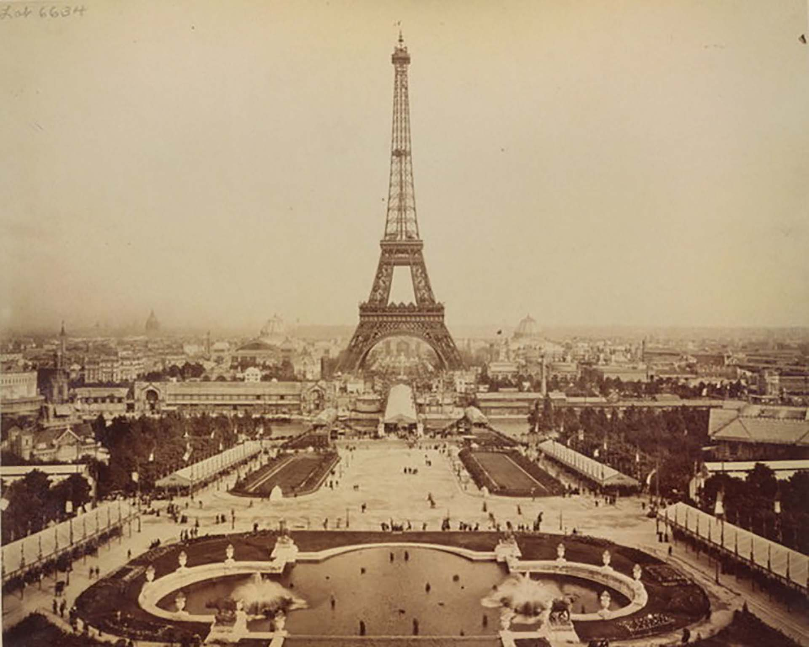

Después del gran éxito obtenido durante la Exposición Universal de 1889 y el no tan grande éxito de la Exposición Universal de 1900, el número de visitantes solo será importante después del final de la Segunda Guerra Mundial. Así, entre 1901 y 1914, entre 120 000 y 260 000 personas subieron a la torre cada año; entre 1915 y 1918 incluidos, permaneció cerrada debido a la Primera Guerra Mundial; entre 1919 y 1939, la torre atrajo un promedio de 480 000 visitantes por año con picos de hasta 800 000 entradas durante la Exposición colonial de 1931 y la Exposición especializada de 1937; y entre 1940 y 1945, la torre es nuevamente cerrada debido a la Segunda Guerra Mundial. Una vez pasado este período, el número de visitantes anuales aumentó progresivamente: 1 300 000 en promedio entre 1946 y 1962. Pero es a partir de 1963 que el número de visitantes crece considerablemente, gracias al auge del turismo internacional. Efectivamente, en 1963, el número de visitantes de la torre sobrepasa los dos millones por primera vez desde el año de su inauguración setenta y cuatro años antes, con la diferencia de que a partir de este momento el número de visitantes aumenta cada año. En 1972 se alcanzó el nivel de los tres millones de visitantes; en 1984 el de cuatro millones; en 1989 el de cinco millones; y en 1998 el de los seis millones de visitantes.160 El 13 de noviembre de 2015, se cerró el acceso debido a los atentados de París hasta nuevo aviso.161 A pesar de este cierre temporal, 6,91 millones de personas visitaron la torre durante 2015.162 La torre es el monumento de pago más visitado del mundo.163 Luego de estos atentados, el 9 de febrero de 2017 el diario francés Le Parisien divulgó un plan de las autoridades para colocar alrededor del monumento un muro antibalas de 2,5 metros de altura. El presidente de la empresa que administra la torre, Bernard Gaudillères, informó al medio que solo es una propuesta y que los costos estimados serían de unos 20 millones de euros (23 millones de dólares).
